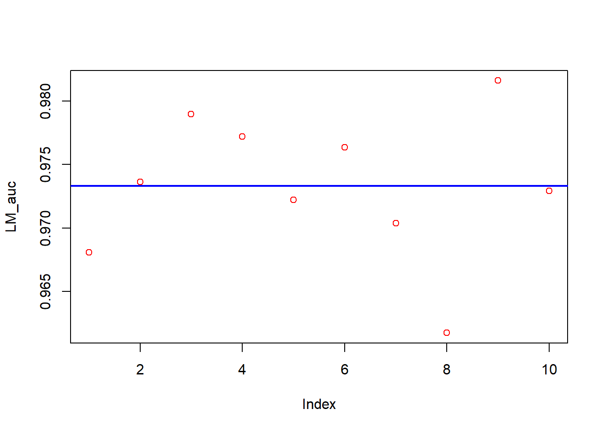
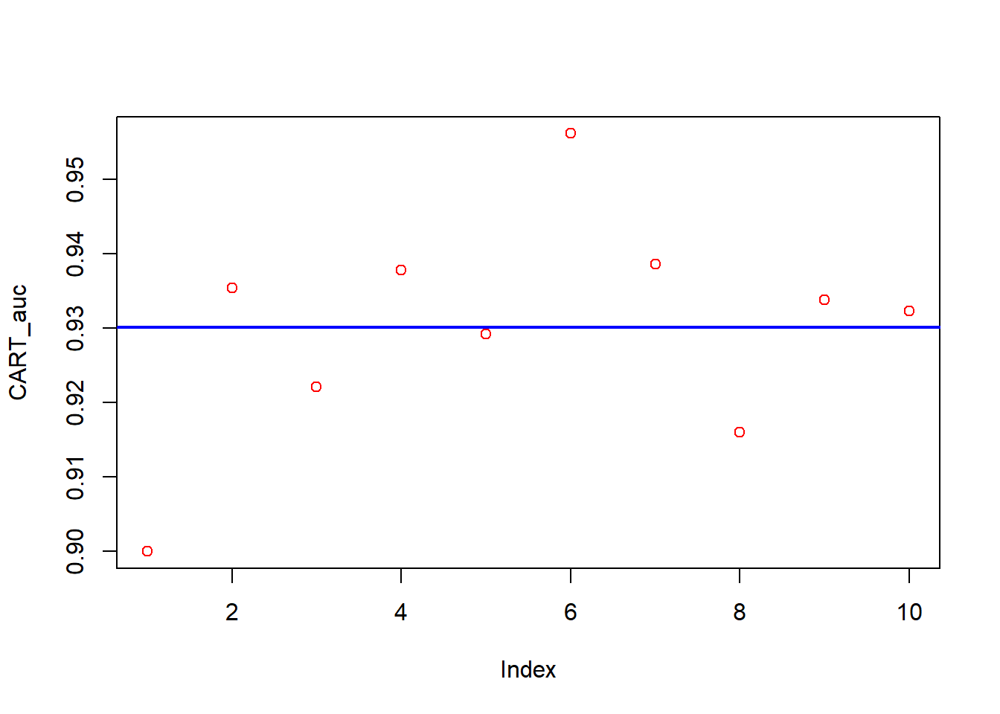
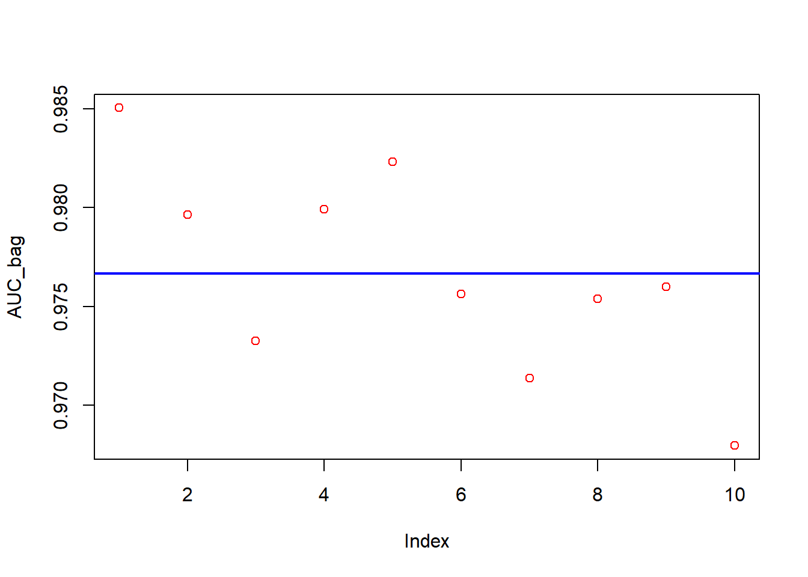
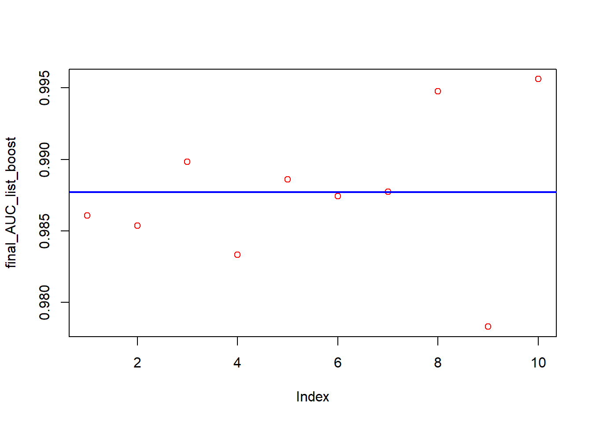
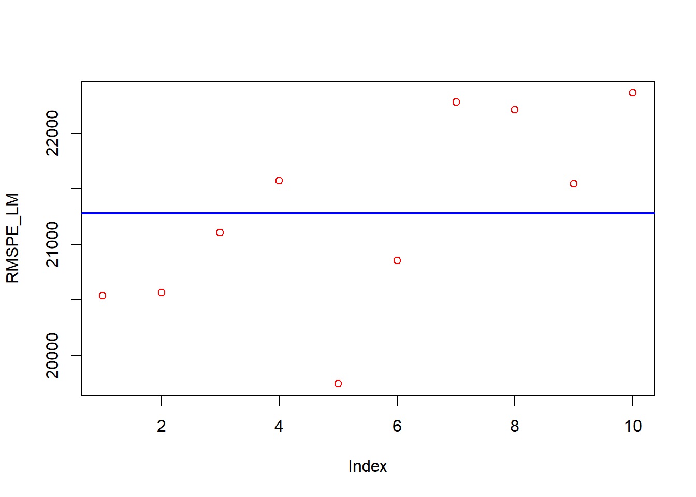
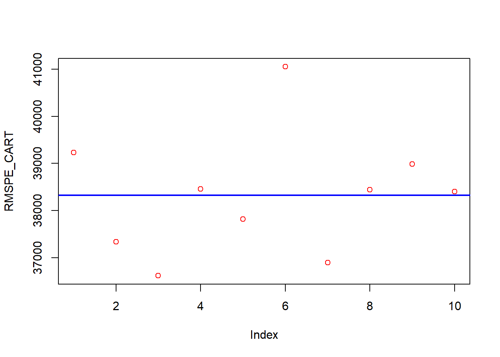
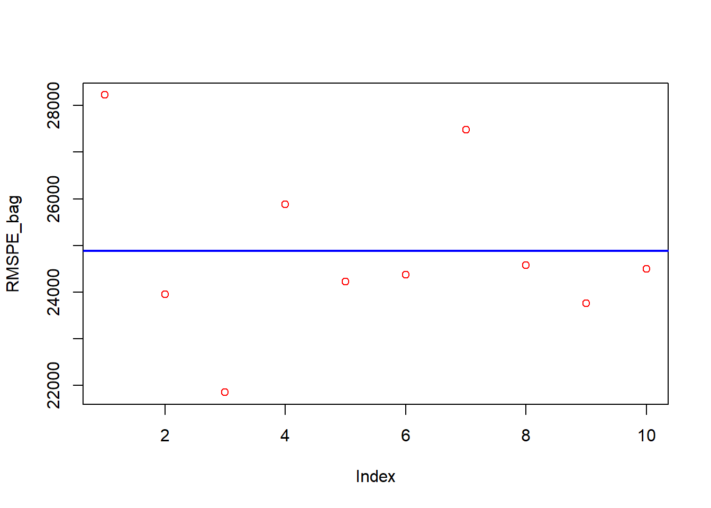
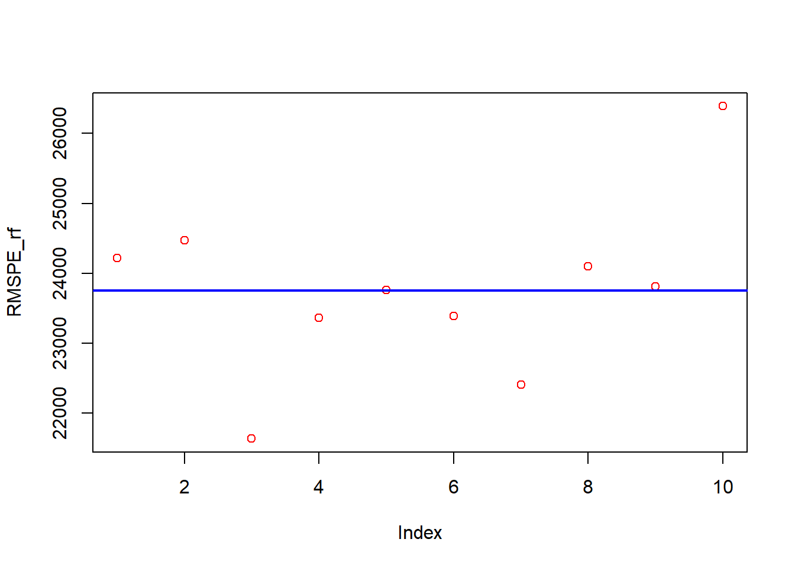
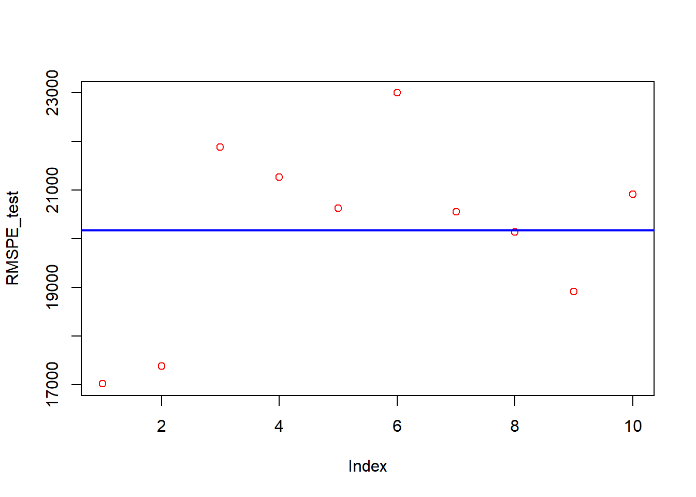

ML_Housing_Alogorithms_SimonRaymond
2023-04-08
Simon Raymond
Since these algorithms are only for demonstration i have run them only 10 times each.
The models i am using are LM, CART(single tree), Bagging, Random Forest, GBM(boosting). In the near future i will add KNN, Neuralnet, AdaBoost and XGBoosting.
These codes are using Housing Data from Dr. Yigit Aydede’s(SMU) RBootcamp. The data is relatively balenced and predictable. At a later time i will use unbalanced data to display under sampling, oversampling and Smoteing
In my loops i will use Bootstrapping as much as possible instead of Cross Validation.
Classification
I will predict housing prices and whether or not they are in the top 75th percentile
library(RBootcamp)
data(ames)
df <- ames
# Convert Sale_Price to a binary variable
df$expensive <- ifelse(df$Sale_Price > quantile(df$Sale_Price, 0.75), 1, 0)
df$Sale_Price <- NULLWe see we have no NAs, our factor variables have relativly few levels.
anyNA(df)## [1] FALSEwhen running my GBM boosting model it produced the following warning of predictors that did not have variation. these can be removed. These collums with no variation in factor levels will actually break down a LM model.
Warning: variable 9: Utilities has no variation. Warning: variable 70: Pool_Area has no variation. Warning: variable 71: Pool_QC has no variation. Warning: variable 5: Street has no variation.
df <- df[ , -c(5, 9, 70, 71)]I want to delete observations that have a factor level with less then 10 observations in that level
I have found when i run this code the deleted observations in the first run then in turn created instances of factor levels with less then 10 observations. To fix this i have looped it twice.
for (i in 1:2){
is_fac <- sapply(df, is.factor)
for (i in names(df)[is_fac]) {
count <- table(df[[i]])
low_count <- names(count[count < 10])
df <- df[!(df[[i]] %in% low_count), ]
}
}
str(df)## 'data.frame': 2694 obs. of 77 variables:
## $ MS_SubClass : Factor w/ 16 levels "One_Story_1946_and_Newer_All_Styles",..: 1 1 1 6 6 12 12 12 6 6 ...
## $ MS_Zoning : Factor w/ 7 levels "Floating_Village_Residential",..: 3 2 3 3 3 3 3 3 3 3 ...
## $ Lot_Frontage : num 141 80 93 74 78 41 43 39 60 75 ...
## $ Lot_Area : int 31770 11622 11160 13830 9978 4920 5005 5389 7500 10000 ...
## $ Alley : Factor w/ 3 levels "Gravel","No_Alley_Access",..: 2 2 2 2 2 2 2 2 2 2 ...
## $ Lot_Shape : Factor w/ 4 levels "Regular","Slightly_Irregular",..: 2 1 1 2 2 1 2 2 1 2 ...
## $ Land_Contour : Factor w/ 4 levels "Bnk","HLS","Low",..: 4 4 4 4 4 4 2 4 4 4 ...
## $ Lot_Config : Factor w/ 5 levels "Corner","CulDSac",..: 1 5 1 5 5 5 5 5 5 1 ...
## $ Land_Slope : Factor w/ 3 levels "Gtl","Mod","Sev": 1 1 1 1 1 1 1 1 1 1 ...
## $ Neighborhood : Factor w/ 29 levels "North_Ames","College_Creek",..: 1 1 1 7 7 17 17 17 7 7 ...
## $ Condition_1 : Factor w/ 9 levels "Artery","Feedr",..: 3 2 3 3 3 3 3 3 3 3 ...
## $ Condition_2 : Factor w/ 8 levels "Artery","Feedr",..: 3 3 3 3 3 3 3 3 3 3 ...
## $ Bldg_Type : Factor w/ 5 levels "OneFam","TwoFmCon",..: 1 1 1 1 1 5 5 5 1 1 ...
## $ House_Style : Factor w/ 8 levels "One_and_Half_Fin",..: 3 3 3 8 8 3 3 3 8 8 ...
## $ Overall_Qual : Factor w/ 10 levels "Very_Poor","Poor",..: 6 5 7 5 6 8 8 8 7 6 ...
## $ Overall_Cond : Factor w/ 10 levels "Very_Poor","Poor",..: 5 6 5 5 6 5 5 5 5 5 ...
## $ Year_Built : int 1960 1961 1968 1997 1998 2001 1992 1995 1999 1993 ...
## $ Year_Remod_Add : int 1960 1961 1968 1998 1998 2001 1992 1996 1999 1994 ...
## $ Roof_Style : Factor w/ 6 levels "Flat","Gable",..: 4 2 4 2 2 2 2 2 2 2 ...
## $ Roof_Matl : Factor w/ 8 levels "ClyTile","CompShg",..: 2 2 2 2 2 2 2 2 2 2 ...
## $ Exterior_1st : Factor w/ 16 levels "AsbShng","AsphShn",..: 4 14 4 14 14 6 7 6 14 7 ...
## $ Exterior_2nd : Factor w/ 17 levels "AsbShng","AsphShn",..: 11 15 4 15 15 6 7 6 15 7 ...
## $ Mas_Vnr_Type : Factor w/ 5 levels "BrkCmn","BrkFace",..: 5 4 4 4 2 4 4 4 4 4 ...
## $ Mas_Vnr_Area : num 112 0 0 0 20 0 0 0 0 0 ...
## $ Exter_Qual : Factor w/ 4 levels "Excellent","Fair",..: 4 4 3 4 4 3 3 3 4 4 ...
## $ Exter_Cond : Factor w/ 5 levels "Excellent","Fair",..: 5 5 5 5 5 5 5 5 5 5 ...
## $ Foundation : Factor w/ 6 levels "BrkTil","CBlock",..: 2 2 2 3 3 3 3 3 3 3 ...
## $ Bsmt_Qual : Factor w/ 6 levels "Excellent","Fair",..: 6 6 6 3 6 3 3 3 6 3 ...
## $ Bsmt_Cond : Factor w/ 6 levels "Excellent","Fair",..: 3 6 6 6 6 6 6 6 6 6 ...
## $ Bsmt_Exposure : Factor w/ 5 levels "Av","Gd","Mn",..: 2 4 4 4 4 3 4 4 4 4 ...
## $ BsmtFin_Type_1 : Factor w/ 7 levels "ALQ","BLQ","GLQ",..: 2 6 1 3 3 3 1 3 7 7 ...
## $ BsmtFin_SF_1 : num 2 6 1 3 3 3 1 3 7 7 ...
## $ BsmtFin_Type_2 : Factor w/ 7 levels "ALQ","BLQ","GLQ",..: 7 4 7 7 7 7 7 7 7 7 ...
## $ BsmtFin_SF_2 : num 0 144 0 0 0 0 0 0 0 0 ...
## $ Bsmt_Unf_SF : num 441 270 1045 137 324 ...
## $ Total_Bsmt_SF : num 1080 882 2110 928 926 ...
## $ Heating : Factor w/ 6 levels "Floor","GasA",..: 2 2 2 2 2 2 2 2 2 2 ...
## $ Heating_QC : Factor w/ 5 levels "Excellent","Fair",..: 2 5 1 3 1 1 1 1 3 3 ...
## $ Central_Air : Factor w/ 2 levels "N","Y": 2 2 2 2 2 2 2 2 2 2 ...
## $ Electrical : Factor w/ 6 levels "FuseA","FuseF",..: 5 5 5 5 5 5 5 5 5 5 ...
## $ First_Flr_SF : int 1656 896 2110 928 926 1338 1280 1616 1028 763 ...
## $ Second_Flr_SF : int 0 0 0 701 678 0 0 0 776 892 ...
## $ Low_Qual_Fin_SF : int 0 0 0 0 0 0 0 0 0 0 ...
## $ Gr_Liv_Area : int 1656 896 2110 1629 1604 1338 1280 1616 1804 1655 ...
## $ Bsmt_Full_Bath : num 1 0 1 0 0 1 0 1 0 0 ...
## $ Bsmt_Half_Bath : num 0 0 0 0 0 0 0 0 0 0 ...
## $ Full_Bath : int 1 1 2 2 2 2 2 2 2 2 ...
## $ Half_Bath : int 0 0 1 1 1 0 0 0 1 1 ...
## $ Bedroom_AbvGr : int 3 2 3 3 3 2 2 2 3 3 ...
## $ Kitchen_AbvGr : int 1 1 1 1 1 1 1 1 1 1 ...
## $ Kitchen_Qual : Factor w/ 5 levels "Excellent","Fair",..: 5 5 1 5 3 3 3 3 3 5 ...
## $ TotRms_AbvGrd : int 7 5 8 6 7 6 5 5 7 7 ...
## $ Functional : Factor w/ 8 levels "Maj1","Maj2",..: 8 8 8 8 8 8 8 8 8 8 ...
## $ Fireplaces : int 2 0 2 1 1 0 0 1 1 1 ...
## $ Fireplace_Qu : Factor w/ 6 levels "Excellent","Fair",..: 3 4 6 6 3 4 4 6 6 6 ...
## $ Garage_Type : Factor w/ 7 levels "Attchd","Basment",..: 1 1 1 1 1 1 1 1 1 1 ...
## $ Garage_Finish : Factor w/ 4 levels "Fin","No_Garage",..: 1 4 1 1 1 1 3 3 1 1 ...
## $ Garage_Cars : num 2 1 2 2 2 2 2 2 2 2 ...
## $ Garage_Area : num 528 730 522 482 470 582 506 608 442 440 ...
## $ Garage_Qual : Factor w/ 6 levels "Excellent","Fair",..: 6 6 6 6 6 6 6 6 6 6 ...
## $ Garage_Cond : Factor w/ 6 levels "Excellent","Fair",..: 6 6 6 6 6 6 6 6 6 6 ...
## $ Paved_Drive : Factor w/ 3 levels "Dirt_Gravel",..: 2 3 3 3 3 3 3 3 3 3 ...
## $ Wood_Deck_SF : int 210 140 0 212 360 0 0 237 140 157 ...
## $ Open_Porch_SF : int 62 0 0 34 36 0 82 152 60 84 ...
## $ Enclosed_Porch : int 0 0 0 0 0 170 0 0 0 0 ...
## $ Three_season_porch: int 0 0 0 0 0 0 0 0 0 0 ...
## $ Screen_Porch : int 0 120 0 0 0 0 144 0 0 0 ...
## $ Fence : Factor w/ 5 levels "Good_Privacy",..: 5 3 5 3 5 5 5 5 5 5 ...
## $ Misc_Feature : Factor w/ 6 levels "Elev","Gar2",..: 3 3 3 3 3 3 3 3 3 3 ...
## $ Misc_Val : int 0 0 0 0 0 0 0 0 0 0 ...
## $ Mo_Sold : int 5 6 4 3 6 4 1 3 6 4 ...
## $ Year_Sold : int 2010 2010 2010 2010 2010 2010 2010 2010 2010 2010 ...
## $ Sale_Type : Factor w/ 10 levels "COD","Con","ConLD",..: 10 10 10 10 10 10 10 10 10 10 ...
## $ Sale_Condition : Factor w/ 6 levels "Abnorml","AdjLand",..: 5 5 5 5 5 5 5 5 5 5 ...
## $ Longitude : num -93.6 -93.6 -93.6 -93.6 -93.6 ...
## $ Latitude : num 42.1 42.1 42.1 42.1 42.1 ...
## $ expensive : num 1 0 1 0 0 0 0 1 0 0 ...Linear Classification (Notice how good LM is, this points to the relationship being very linear)
library(ROCR)
df_lm <- df
n <- 10
LM_auc <- c()
for (i in 1:n){
idx <- sample(nrow(df_lm), nrow(df_lm), replace = TRUE)
train <- df_lm[idx,]
test <- df_lm[-idx, ]
LM_model <- lm(expensive ~., data = train)
LM_phat <- predict(LM_model, test)
LM_pred_rocr <- prediction(LM_phat, test$expensive)
LM_auc_ROCR <- performance(LM_pred_rocr, measure = "auc")
LM_auc[i] <- LM_auc_ROCR@y.values[[1]]
}
mean(LM_auc)## [1] 0.9733098sd(LM_auc)## [1] 0.005732939plot(LM_auc, col="red")
abline(a = mean(LM_auc), b = 0, col = "blue", lwd = 2)
CART Classification
library(rpart)
library(ROCR)
n <- 10
CART_auc <- numeric()
for (i in 1:n){
idx <- sample(nrow(df), nrow(df), replace = TRUE)
train <- df[idx,]
test <- df[-idx, ]
CART_model <- rpart(expensive ~., data = train)
CART_phat <- predict(CART_model, test)
CART_pred_rocr <- prediction(CART_phat, test$expensive)
CART_auc_ROCR <- performance(CART_pred_rocr, measure = "auc")
CART_auc[i] <- CART_auc_ROCR@y.values[[1]]
}
mean(CART_auc)## [1] 0.9301618sd(CART_auc)## [1] 0.01501417plot(CART_auc, col="red")
abline(a = mean(CART_auc), b = 0, col = "blue", lwd = 2)
Bagging Classification In reality B should be much larger
library(randomForest)## randomForest 4.7-1.1## Type rfNews() to see new features/changes/bug fixes.library(ROCR)
AUC_bag <- c()
n <- 10
B <- 50
for (i in 1:n) {
ind <- sample(nrow(df), nrow(df), replace = TRUE)
train <- df[ind, ]
test <- df[-ind, ]
p = ncol(train)-1
model_bag <- randomForest(expensive ~.,
ntree = B, mtry = p, minbucket = 1, data = train) #Bagged
phat_bag <- predict(model_bag, test)
pred_rocr_bag <- prediction(phat_bag, test$expensive)
auc_ROCR_bag <- performance(pred_rocr_bag, measure = "auc")
AUC_bag[i] <- auc_ROCR_bag@y.values[[1]]
}
mean(AUC_bag)## [1] 0.9793216sd(AUC_bag)## [1] 0.003901843plot(AUC_bag, col="red")
abline(a = mean(AUC_bag), b = 0, col = "blue", lwd = 2)
Random Forest Classification In reality B should be much larger
library(randomForest)
library(ROCR)
AUC_rf <- c()
n <- 10
B <- 50
for (i in 1:n) {
ind <- sample(nrow(df), nrow(df), replace = TRUE)
train <- df[ind, ]
test <- df[-ind, ]
model_rf <- randomForest(expensive ~.,
ntree = B,
data = train)
phat_rf <- predict(model_rf, test)
pred_rocr_rf <- prediction(phat_rf, test$expensive)
auc_ROCR_rf <- performance(pred_rocr_rf, measure = "auc")
AUC_rf[i] <- auc_ROCR_rf@y.values[[1]]
}
mean(AUC_rf)## [1] 0.9831631sd(AUC_rf)## [1] 0.002991809plot(AUC_rf, col="red")
abline(a = mean(AUC_rf), b = 0, col = "blue", lwd = 2)
GBM Boosting Classification I ran this multiple times with different ranges and landed close to these parameters. It is important to note with this algoithm we can either broaden the search range or work in random selection for the hyperparameters outside of the loop
library(gbm)## Warning: package 'gbm' was built under R version 4.2.3## Loaded gbm 2.1.8.1h <- seq(0.09, 0.10, 0.01)
B <- c(700, 750)
D <- c(1:2)
runs <- 10
grid <- as.matrix(expand.grid(D, B, h))
n <- nrow(grid)
Opt_param <- c()
final_AUC_list_boost <- c()
for (j in 1:runs){
ind_boost_test <- sample(nrow(df), nrow(df)*0.9)
model_data_boost <- df[ind_boost_test, ]
test_boost <- df[-ind_boost_test, ]
AUC_boost_tuning <- c()
for (i in 1:n){
ind_boost <- sample(nrow(model_data_boost), nrow(model_data_boost), replace = TRUE)
train_boost <- model_data_boost[ind_boost, ]
val_boost <- model_data_boost[-ind_boost, ]
boost_model <- gbm(expensive~.,
distribution ="bernoulli",
n.trees= grid[i, 2],
interaction.depth = grid[i, 1],
shrinkage = grid[i, 3],
bag.fraction = 1,
data = train_boost)
phat_boost <- predict(boost_model, n.trees = grid[i, 2], val_boost, type = "response")
pred_rocr_boost <- prediction(phat_boost, val_boost$expensive)
auc_ROCR_boost <- performance(pred_rocr_boost, measure = "auc")
AUC_boost_tuning[i] <- auc_ROCR_boost@y.values[[1]]
}
best_index <- which.max(AUC_boost_tuning)
best_AUC_boost <- AUC_boost_tuning[best_index]
best_params_boost <- grid[best_index, ]
Opt_param[[j]] <- best_params_boost
model_test <- gbm(expensive~.,
distribution ="bernoulli",
n.trees= best_params_boost[2],
interaction.depth = best_params_boost[1],
shrinkage = best_params_boost[3],
bag.fraction = 1,
data = model_data_boost)
phat_final_boost <- predict(model_test, test_boost, n.trees = best_params_boost[2], type = "response")
pred_rocr_final_boost <- prediction(phat_final_boost, test_boost$expensive)
AUC_ROCR_boost_test <- performance(pred_rocr_final_boost, measure = "auc")
final_AUC_list_boost[j] <- AUC_ROCR_boost_test@y.values[[1]]
}
final_AUC_boost <- mean(final_AUC_list_boost)
final_sd_boost <- sd(final_AUC_list_boost)
final_params_boost <- do.call(rbind, Opt_param)
final_params_boost## Var1 Var2 Var3
## [1,] 2 700 0.09
## [2,] 1 750 0.09
## [3,] 1 750 0.10
## [4,] 1 750 0.10
## [5,] 1 700 0.09
## [6,] 2 750 0.09
## [7,] 1 750 0.10
## [8,] 1 700 0.09
## [9,] 1 750 0.10
## [10,] 2 700 0.09final_sd_boost## [1] 0.005093431final_AUC_boost## [1] 0.9877094plot(final_AUC_list_boost, col="red")
abline(a = mean(final_AUC_list_boost), b = 0, col = "blue", lwd = 2)
Regresssion
I will work on the same data but instead of classification i will work regressionally.
rm(list = ls())
library(RBootcamp)
data(ames)
df <- amesdf <- df[ , -c(5, 9, 70, 71)]for (i in 1:2){
factor_vars <- sapply(df, is.factor)
for (i in names(df)[factor_vars]) {
counts_table <- table(df[[i]])
low_count <- names(counts_table[counts_table < 10])
df <- df[!(df[[i]] %in% low_count), ]
}
}Linear Regresional
n <- 10
RMSPE_LM <- c()
for (i in 1:n){
idx <- sample(nrow(df), nrow(df), replace = TRUE)
train <- df[idx,]
test <- df[-idx, ]
LM_model <- lm(Sale_Price~., data = train)
LM_yhat <- predict(LM_model, test)
RMSPE_LM[i] <- sqrt(mean((test$Sale_Price - LM_yhat)^2))
}
mean(RMSPE_LM)## [1] 21376.07sd(RMSPE_LM)## [1] 513.3282plot(RMSPE_LM, col="red")
abline(a = mean(RMSPE_LM), b = 0, col = "blue", lwd = 2)
CART Regresional
library(rpart)
n <- 10
RMSPE_CART <- c()
for (i in 1:n){
idx <- sample(nrow(df), nrow(df), replace = TRUE)
train <- df[idx,]
test <- df[-idx, ]
CART_model <- rpart(Sale_Price ~., data = train)
CART_yhat <- predict(CART_model, test)
RMSPE_CART[i] <- sqrt(mean((test$Sale_Price - CART_yhat)^2))
}
mean(RMSPE_CART)## [1] 39466.64sd(RMSPE_CART)## [1] 1652.874plot(RMSPE_CART, col="red")
abline(a = mean(RMSPE_CART), b = 0, col = "blue", lwd = 2)
Bagging Regressional
library(randomForest)
RMSPE_bag <- c()
n <- 10
B <- 50
for (i in 1:n) {
ind <- sample(nrow(df), nrow(df), replace = TRUE)
train <- df[ind, ]
test <- df[-ind, ]
p = ncol(train)-1
model_bag <- randomForest(Sale_Price ~.,
ntree = B, mtry = p, minbucket = 1, data = train) #Bagged
yhat_bag <- predict(model_bag, test)
RMSPE_bag[i] <- sqrt(mean((test$Sale_Price - yhat_bag)^2))
}
mean(RMSPE_bag)## [1] 24880.76sd(RMSPE_bag)## [1] 1861.832plot(RMSPE_bag, col="red")
abline(a = mean(RMSPE_bag), b = 0, col = "blue", lwd = 2)
Random Forest Regressional
library(randomForest)
RMSPE_rf <- c()
n <- 10
B <- 50
for (i in 1:n) {
ind <- sample(nrow(df), nrow(df), replace = TRUE)
train <- df[ind, ]
test <- df[-ind, ]
model_rf <- randomForest(Sale_Price ~.,
ntree = B, data = train) #rf
yhat_rf <- predict(model_rf, test)
RMSPE_rf[i] <- sqrt(mean((test$Sale_Price - yhat_rf)^2))
}
mean(RMSPE_rf)## [1] 23756.3sd(RMSPE_rf)## [1] 1264.185plot(RMSPE_rf, col="red")
abline(a = mean(RMSPE_rf), b = 0, col = "blue", lwd = 2) 
BOOSTING Regressional I ran this multiple times and these are the general parameter ranges a narrowed in on.
library(gbm)
h <- seq(0.11, 0.13, 0.01)
B <- c(500, 550)
D <- c(1:2)
runs <- 10
grid <- as.matrix(expand.grid(D, B, h))
n <- nrow(grid)
Opt_param <- c()
RMSPE_test <- c()
for (j in 1:runs){
ind_boost_test <- sample(nrow(df), nrow(df)*0.9)
model_data_boost <- df[ind_boost_test, ]
test_boost <- df[-ind_boost_test, ]
RMSPE_boost_tuning <- c()
for (i in 1:n){
ind_boost <- sample(nrow(model_data_boost), nrow(model_data_boost), replace = TRUE)
train_boost <- model_data_boost[ind_boost, ]
val_boost <- model_data_boost[-ind_boost, ]
boost_model <- gbm(Sale_Price~.,
distribution ="gaussian",
n.trees= grid[i, 2],
interaction.depth = grid[i, 1],
shrinkage = grid[i,3],
bag.fraction = 1,
data = train_boost)
yhat_boost <- predict(boost_model, n.trees = grid[i, 2], val_boost, type = "response")
RMSPE_boost_tuning[i] <- sqrt(mean((val_boost$Sale_Price - yhat_boost)^2))
}
best_RMSPE_boost <- RMSPE_boost_tuning[which.min(RMSPE_boost_tuning)]
best_params_boost <- grid[which.min(RMSPE_boost_tuning), ]
Opt_param[[j]] <- best_params_boost
model_test <- gbm(Sale_Price ~.,
distribution ="gaussian",
n.trees= best_params_boost[2],
interaction.depth = best_params_boost[1],
shrinkage = best_params_boost[3],
bag.fraction = 1,
data = model_data_boost)
yhat_boost_final <- predict(model_test, n.trees = best_params_boost[2], test_boost, type = "response")
RMSPE_test[j] <- sqrt(mean((test_boost$Sale_Price - yhat_boost_final)^2))
}
final_RMSPE_boost <- mean(RMSPE_test)
final_sd_boost <- sd(RMSPE_test)
final_params_boost <- do.call(rbind, Opt_param)
final_params_boost## Var1 Var2 Var3
## [1,] 2 550 0.13
## [2,] 2 550 0.13
## [3,] 2 500 0.13
## [4,] 2 500 0.13
## [5,] 2 500 0.13
## [6,] 2 500 0.13
## [7,] 2 550 0.11
## [8,] 2 550 0.12
## [9,] 2 550 0.12
## [10,] 2 500 0.11final_sd_boost## [1] 1892.097final_RMSPE_boost## [1] 20168.85plot(RMSPE_test, col="red")
abline(a = mean(RMSPE_test), b = 0, col = "blue", lwd = 2)